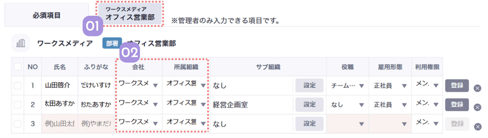

組織にまとめてメンバーを登録したい時や、
特定の組織の登録済みメンバーだけを見たい時に便利な絞り込み機能です。


-
01
組織ごとに絞り込みます
タブをクリックすると組織を選択できます。複数の組織を選択して表示することも可能です。
-
02
登録するメンバーの組織が設定されます
一つの組織に絞り込むと、メンバー登録表の会社と所属組織も該当の組織が設定されます。こうして、同じ組織にまとめてメンバーを追加することができます。
入力中に所属組織を他の組織に変更すると、入力途中のデータは変更先の組織の表に移動します。